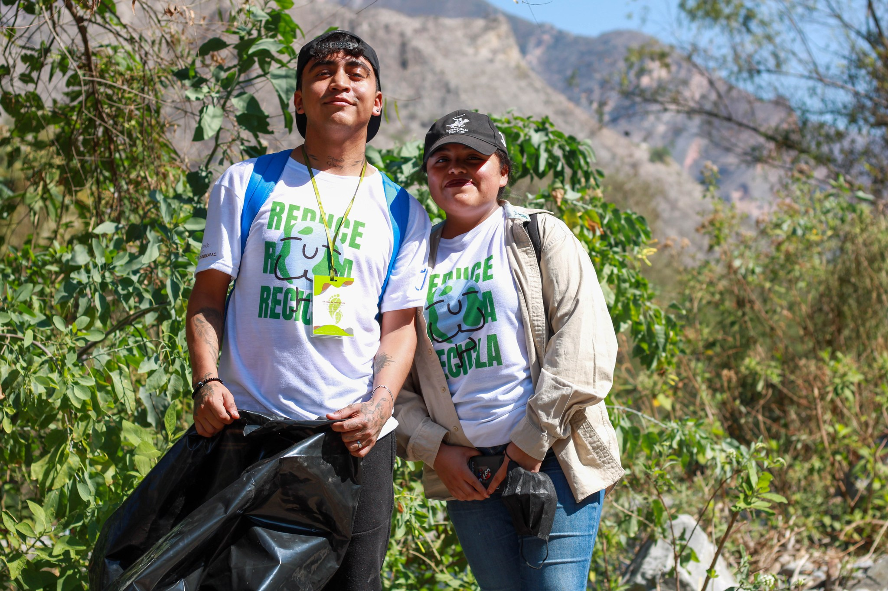
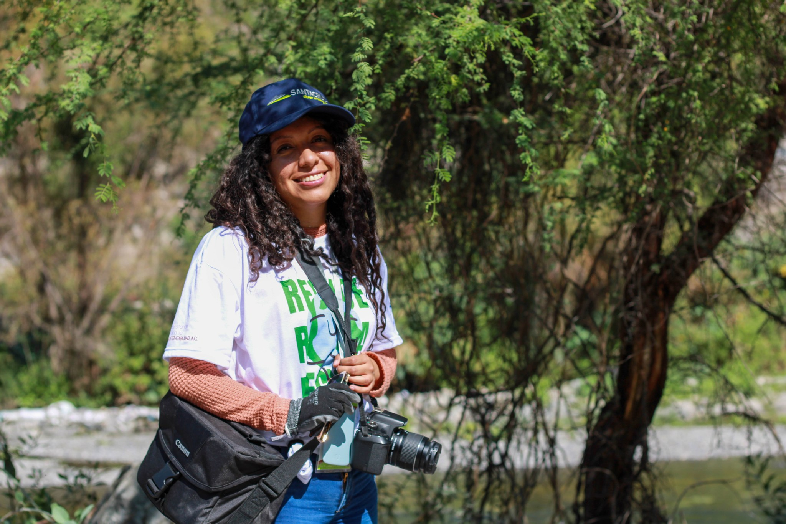

Buscamos que las comunidades a través de diversos proyectos tengan la capacidad de organizarse para gestionar temas de interés o impacto en su comunidad de manera rápida, segura y sostenible
Es un proceso de co-construcción de competencias a través de talleres y capacitaciones enfocadas a las necesidades de cada comunidad
Implementación de acciones que beneficien a la economía popular y por ende a las comunidades
Buscamos apoyar el desarrollo de las comunidades indígenas de Zimapán, buscando preservar sus costumbres y tradiciones

¿Qué Hacemos?
En Transitando Hacia la Sustentabilidad trabajamos en dejar legados positivos que brinden a las comunidades que conviven directamente con el sector minero capacidades autogestivas, para que a través del trabajo colectivo transformen su entorno y su calidad de vida de una forma sustentable

¿Cómo lo hacemos?
Mantenemos un vínculo cercano con cada comunidad, esto nos permite conocer sus fortalezas y áreas: